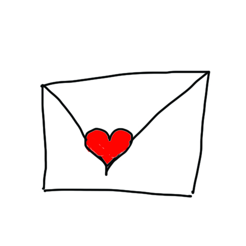
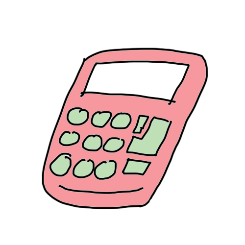

|  |  |  |
|
| Cover letter | Numerical and Verbal test | Interview | Dressed & Ready to Impress! |
Tailoring your cover letter to your potential employer
Your cover letter is not a narrative of your CV!
Generally about one page long
Sections: About You/Your motivations for applying to the company/Why the company should hire you
Some references:
Most companies have a basic numerical and verbal test to see if you are able to manage with numbers and reading and comprehension.
Do remember that the company you apply for will likely have a practice section that you may want to try out because you tackle the real deal. In this case, the mock tests would probably as close to the real ones you will have to sit for as possible, and it would be best if you tackle them after some preparation.
Strategies to overcome verbal test: Some strategies in order to increase the speed of understanding what the questions want encourage you to read the questions before attempting the passage, so that you know what information you may be looking for.
Strategies to overcome the numerical test: Familiarise yourself with percentages, reading graphs, pie charts and interpreting statistics, you don’t have to do anything really complex, but some practise, believe us, can make you overcome this quickly, which potentially leaves you some time to check over your work!
Some resources for free practice tests:
Understanding the Company
Basic tools: look at the company website, try to find out more about the website
Social media: look at their Facebook, youtube, twitter, instagram
if they dont have any of these, post up questions online, try to find someone who has once worked there and take some time to talk to them!
Understanding your Role
Do a basic google search to find out what your role will encompass, if you dont already know
or ask family/friends/friends of friends/acquaintances who have been in that job to get an insider’s perspective
Careeers Fair as a good opportunity to meet and network with people who might just be a few steps ahead from where you are!
Careers Services in universities
Understanding yourself
Interviews are platforms in which employers try to get to you as much as possible in a limited time frame, so remember, be true to yourself! If your interviewer hires you because you have been pretending to be someone you are not, you will have a hard time putting up a front for your whole career! Interviews generally start off with a basic introduction of yourself. Start out with a basic outline of yourself, and try to align your values and your interests with that of the company you are applying for! Never, never, make things up, be as genuine as possible!
Most interviews also include a competency test where you will be interviewed on certain core skills/competencies that may be relevant for the job you are applying for. Examples of competency may be: problem solving, time management, teamwork, leadership, etc. It is always useful to prepare some answers beforehand so if you face a bad case of nerves, at the very least, you already have something in mind!
A nifty trick in structuring your answer is by using the STAR approach!
Situation/Task - what was the situation like
Action - what did you do to solve this problem?
Result - what was the result of your actions?
It keeps your answer structured, and stops you from rambling on and completely getting off track!
The interview is likely the first time your future employer will be able to see in person for the first time, and you’d like to show them that you can look professional at all times! Some companies/industries have very specific methods of dressing that would be worth doing some research on. For example, some companies may have more conservative cultures and have strict rules about skirt length, or the neckline of your blouse/dress. Do remember to do your homework, and if that is the case and a strict dress code that is not something you are going for, you might want to reconsider applying for a job in that particular company.
We included here some picks on Pinterest that can serve as fun examples of office friendly attire! Remember, when in doubt, OVERDRESS rather than UNDERDRESS!